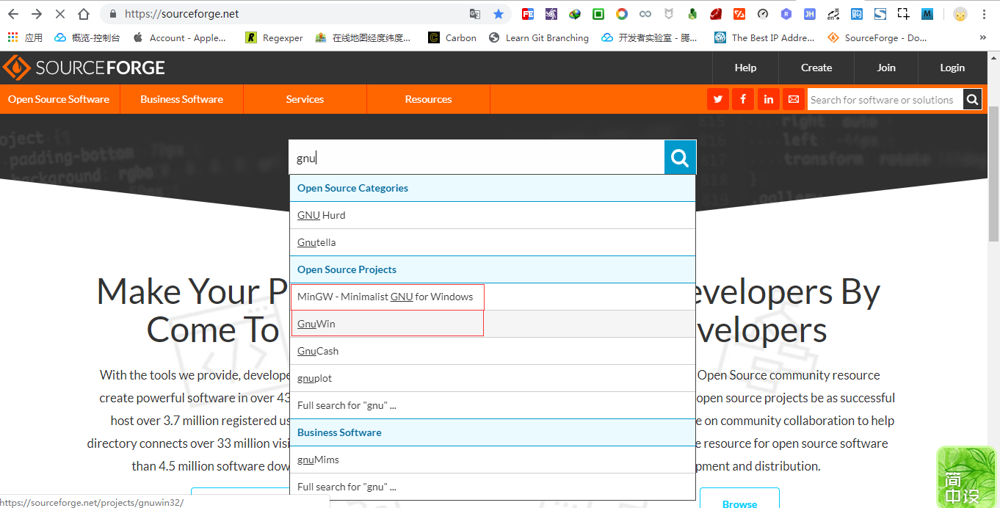

1. git bash 没有tree命令?
1.1. 开门见山
git bash 是 Windows 用户安装 git 时默认安装的命令行工具,不仅界面漂亮功能也不错,大多数情况下可以替代 Windows 原生的 cmd 命令行.
然而,git bash 命令行不是万金油,并不能完全替代 cmd ,详情请参考 mintty 官网的相关说明.
mintty is not a full replacement for the Windows Console window
git bash 命令行默认使用 mintty 作为终端模拟器,而 mintty 官宣表示自己不能完全替代 cmd,也就是说 git bash 可能不具备某些 cmd 命令.

举个简单的例子,如果想要查看当前目录的文件结构,最好是以目录树的形式展现,聪明的你获取已经猜到了tree 命令.
git bash 命令行中输入 tree 命令发现并无此命令.
snowdreams1006@home MINGW64 /g/sublime/test
$ tree
bash: tree: command not found
为了验证,确实没有 tree 命令,我们直接打开 git bash 支持的命令文件目录,查看到底有没有 tree.exe 文件.

在
git bash桌面快捷方式右键,选择打开文件位置,当前正处于git的安装目录,进入.\usr\bin文件夹.
经过验证,git bash 支持的命令文件确实没有发现 tree.exe 文件,因此真的不支持 tree 命令.
然而,cmd 自带的命令行中输入 tree 中竟然发现能够输出目录树,原来 cmd 支持 tree 命令.
G:\sublime\test>tree
卷 工作 的文件夹 PATH 列表
卷序列号为 00000081 CC3C:50D0
G:.
├─cmd
└─git

tree命令其实调用的是tree.com并不是常见的tree.exe格式.
1.2. 科普时间
现在我们已经知道 git bash 提供的终端模拟器不支持某些 linux 命令,但是为什么不支持以及如何才能支持这些命令呢?
这些问题必须等我们弄清楚 mintty 的朋友圈关系才能更好地解决上述问题,接下来简单科普下 mintty 的朋友圈.
关于科普知识的来源,请参考上一篇文章: <
>
1.2.1. mintty 是什么
Mintty是Cygwin，MSYS或Msys2的终端模拟器,派生项目和WSL.
mintty 开源终端模拟器,基于 putty 的终端仿真和 Windows 前端页面.
mintty 作为一款优秀的终端模拟器,不仅是其他系统上默认的终端,也是 git bash 的默认终端.
$ mintty --help
Usage: mintty [OPTION]... [ PROGRAM [ARG]... | - ]
Start a new terminal session running the specified program or the user's shell.
If a dash is given instead of a program, invoke the shell as a login shell.
Options:
-c, --config FILE Load specified config file
-e, --exec Treat remaining arguments as the command to execute
-h, --hold never|start|error|always Keep window open after command finishes
-i, --icon FILE[,IX] Load window icon from file, optionally with index
-l, --log FILE|- Log output to file or stdout
-o, --option OPT=VAL Override config file option with given value
-p, --position X,Y Open window at specified coordinates
-s, --size COLS,ROWS Set screen size in characters
-t, --title TITLE Set window title (default: the invoked command)
-u, --utmp Create a utmp entry
-w, --window normal|min|max|full|hide Set initial window state
--class CLASS Set window class name (default: mintty)
-H, --help Display help and exit
-V, --version Print version information and exit
如果想要自定义 mintty 终端,在 git bash 命令行界面右键选择选项设置即可打开设置页面.

1.2.2. mingw 是什么
mingw是Minimalist GNU for Windows的缩写,是Microsoft Windows应用程序的极简主义开发环境.

1.2.3. msys 是什么
MSYS是Minimal SYStem的缩写,是Bourne Shell命令行解释器系统.作为Microsoft的cmd.exe的替代品,它提供了一个通用的命令行环境,特别适合与MinGW一起使用,用于将许多开源应用程序移植到MS-Windows平台; 它是Cygwin-1.3的轻量级分支，它包含一小部分Unix工具,可以帮助实现这一目标.
1.2.4. cygwin 是什么
大量
GNU和开源工具,提供类似于Windows上的Linux发行版的功能.

1.2.5. gnu 是什么
GNU是GNU's Not Unix的递归缩写,是自由软件操作系统.

1.2.6. 朋友圈关系梳理
git bash 采用 mintty 作为终端模拟器,而 mintty 终端是 mingw ,msys2 和 cygwin的默认终端,这些"操作系统"或多或少都是 GNU 的一部分.
GNU 是自由软件运动的成果,提出自由软件以及自由软件操作系统概念,源码开源发布.
正因如此,江山代有才人出,前人栽树后人乘凉,Cygwin 作为 GNU 一员,提出了要在 Windows 打造出 Linux 的感觉,开发出一套完整的解决方案.
或许由于这套方案太完整,功能齐全因而软件包体积庞大,因此 MinGW 和 MSYS 分别在其基于上进行精简重构,保留最简功能,发展出"极简主义的GNU".
开源的力量是可持续的,慢慢的,这些操作系统的内置终端功能也被单独提取出来,mintty 作为他们的默认终端也逐渐独立提供终端模拟器服务,轻松和各个系统进行安装集成.
说到开源,自然是少不了 git 的身影,分布式版本控制系统这种优秀工具应该造福全人类,然而 git 本身仅支持类 Unix 系统,并不提供 WIndows 系统的支持.
Git For Windows 组织出手增加了 git 对 Windows 系统的支持,背后的技术多半离不开上述介绍的 GNU 操作系统.
Git Bash Here 则是 Git For Windows 的命令行工具,使用的终端模拟器就是明星模拟器 mintty.
1.3. 回到正题
弄清楚事情的来龙去脉后,对我们解决问题有什么帮助呢?
帮助可大了去了,刨根问题找到了源头,问题自然迎刃而解!
1.3.1. 我劝少年放弃吧
你确定不是在逗我?让我直接放弃?

亲,真的抱歉呢,放弃是解决问题的最快途径!
...
谈一谈为什么要放弃?
git bash 命令行使用的是 mintty 终端,而 mintty 终端并不能完全替代 cmd ,也没有提供包管理工具供我们扩展第三方命令.
所以默认情况下,如果没有提供某些命令,那我们只好放弃在 git bash 命令行中使用这些命令.
此路不通,自然会寻求其他解决途径,比如可以借助 cmd 命令行或者其他第三方软件等,没必要非要坚持使用git bash!
既然本文是 tree 命令引发的讨论,那就谈点和主题有关的技能点,不然岂不是跑题了?
tree 命令虽然 git bash 不提供,但是 cmd 却已经内置了.
值得注意的是,cmd 提供的 tree 命令比较特殊,并不是常见的 .exe 结尾文件,而是 .com 结尾的文件.
所以 git bash 中输入 tree 命令时,自身 /usr/bin 中没有 tree.exe 文件,而系统中也没有 tree.exe 命令,那么就会提示找不到命令了啊!
手动补全命令
那么第一种调用方法便是补全后缀名,这样自然能够调用 cmd 的 tree.com 命令.

git bash并不识别.com后缀的命令,输入tree命令时以为是tree.exe,实际上tree命令应该是tree.com的简写.
我擦,竟然出现乱码,根据我多年的开发经验来看,乱码问题多半是编码问题导致的,那么修改下终端的编码设置应该就能解决问题.

在命令行窗口内右键弹出
mintty终端的设置页面,选择文本(Text)中本地化(Locale)配置,选择中文简体(zh_CN),字符集(Character set)设置为UTF-8.

瞬间被打脸,无论是原来的git bash 命令行窗口还是新开的命令行窗口,仍然还是乱码!
然而,我是不会承认被打脸的,世人皆醉我独醒,肯定是 bug,哈哈!
其实,中文乱码真的是
bug,还是官方认可的bug哟,我并没有被打脸呢,后续会介绍.
调用 cmd 程序
既然git bash 没有提供 tree 命令,而恰巧 cmd 提供了 tree 命令,那为何不假借他人之手实现自己的目的呢?
在 cmd 中使用 tree 命令直接输入即可得到目录树结构,但是现在需要在 git bash 中调用 cmd 中的 tree 命令.
# 直接输入 `tree` 命令,正确响应并且无中文乱码.
G:\sublime\test>tree
卷 工作 的文件夹 PATH 列表
卷序列号为 00000093 CC3C:50D0
G:.
├─cmd
└─git
# 输入 `cmd tree` 命令,虽无报错,但也没有正确响应.
G:\sublime\test>cmd tree
Microsoft Windows [版本 6.3.9600]
(c) 2013 Microsoft Corporation。保留所有权利。
cmd中直接输入tree命令即可,无需通过cmd tree这种方式,还以为你要调用cmd命令呢!
因此,我们需要告诉git bash 要通过 cmd 去调用下 tree 命令.
# 注意看前缀是 `snowdreams1006@home MINGW64` 表明当前处于 `git bash` 环境
snowdreams1006@home MINGW64 /g/sublime/test
# 输入 `cmd tree` 命令,虽无报错,但也没有正确响应,并且仍然有中文乱码.
$ cmd tree
Microsoft Windows [▒汾 6.3.9600]
(c) 2013 Microsoft Corporation▒▒▒▒▒▒▒▒▒▒Ȩ▒▒▒▒
# 输出 `tree` 命令,正确响应但有中文乱码.此时命令行前缀已经更改为 `G:\sublime\test>` 表明当前不再处于`git bash` 环境!
G:\sublime\test>tree
tree
▒▒ ▒▒▒▒ ▒▒▒ļ▒▒▒ PATH ▒б▒
▒▒▒▒▒к▒Ϊ 0000006B CC3C:50D0
G:.
▒▒▒▒cmd
▒▒▒▒git
通过上述操作结果来看,不难发现以下问题.
cmd tree命令切换到cmd环境,并且tree命令并没有执行. 换句话说,cmd tree和cmd dir或者cmd的作用相同,都是切换了当前bash环境.- 进入
cmd命令行运行tree能够得到正确响应,但存在中文乱码. - 想要退出
cmd环境,Ctrl + C组合即可重新回到git bash环境.
由此可见,不加任何参数冒昧进入到 cmd 环境还是比较麻烦的,因此下面提供带参数的命令帮助我们阅后即焚.
cmd //c tree 命令,阅后即焚,表示执行完立即退出.
snowdreams1006@home MINGW64 /g/sublime/test
$ cmd //c tree
▒▒ ▒▒▒▒ ▒▒▒ļ▒▒▒ PATH ▒б▒
▒▒▒▒▒к▒Ϊ 00000008 CC3C:50D0
G:.
▒▒▒▒cmd
▒▒▒▒git
snowdreams1006@home MINGW64 /g/sublime/test
$
执行命令前后我们都在
git bash环境并且在cmd中得到正确响应结果,唯一的区别就是多加了//c参数,表示执行完命令立即退出cmd环境.
优雅调用 cmd
简单总结下,如何在 git bash 中借助 cmd 实现 tree 命令.
tree.com: 补全调用命令后缀名,直接调用系统命令.cmd //c tree: 借助cmd运行tree命令,从而实现调用tree的目的.- 这两种方式都存在中文乱码问题,即使设置了终端的编码方式也没有解决乱码.
调用 tree 命令的目的已经达到,没有解决的问题是中文乱码.
解决问题最快速的方式是百度一下或者从官网寻求帮助,这次我选择后者,因为百度一下人人都会,不用我再讲了吧!
简单解释下这段话的意思:
如果在 mintty 终端调用原生 cmd 程序,简单的输出指令没有什么问题,交互指令可能存在问题.
因此建议使用 winpty 进行包装再调用原生 cmd 程序.
winpty是一种提供与cmd通信的软件包,详情请参考https://github.com/rprichard/winpty

有什么神奇之处?不妨加上 winpty 试试看!
snowdreams1006@home MINGW64 /g/sublime/test
# `winpty` + `tree.com` : 正常输出且无中文乱码
$ winpty tree.com
卷 工作 的文件夹 PATH 列表
卷序列号为 00000074 CC3C:50D0
G:.
├─cmd
└─git
snowdreams1006@home MINGW64 /g/sublime/test
# `winpty` + `cmd //c tree` : 正常输出且无中文乱码
$ winpty cmd //c tree
卷 工作 的文件夹 PATH 列表
卷序列号为 000000B3 CC3C:50D0
G:.
├─cmd
└─git
snowdreams1006@home MINGW64 /g/sublime/test
$
果然是神药,一下子就治好了我多年的老寒腿啊!
winpty tree.com: 不叫小名而叫全称,直接调用系统命令winpty cmd //c tree: 假借他人之手,变相调用系统命令
上文中说设置文件编码应该能够解决中文乱码问题结果仍然有乱码,猜测是
bug,现在没有打脸吧?
既然已经提供了解决方案,那文章是不是应该到此为止了呢?
不不不,远远还没结束,这只是开胃小菜,好戏还在后头呢.
更何况这命令也忒长了,记不住啊!
很简单,可以设置别名啊,把常用命令设置成别名,这样就记住啦!
输入 alias 命令没有报错,说明目前环境是支持设置别名的.
snowdreams1006@home MINGW64 /g/sublime/test
$ alias
alias ll='ls -l'
alias ls='ls -F --color=auto --show-control-chars'
alias node='winpty node.exe'
按照 linux 的操作习惯,命令行设置的一般都是临时性的,想要永久生效,都要写入到文件中,别名这种当然要一劳永逸设置成永久文件.
snowdreams1006@home MINGW64 /g/sublime/test
$ cat /etc/bashrc
cat: /etc/bashrc: No such file or directory
snowdreams1006@home MINGW64 /g/sublime/test
$ cat ~/.bashrc
cat: /c/Users/snowdreams1006/.bashrc: No such file or directory
竟然配置文件都不存在?

当然不存在了啊!快醒醒,你是在 Windows 系统上并不是 Linux 系统,上哪给你弄这些配置文件去?
脑海中迅速闪现哲学基本问题: 我是谁,我在那,我在干什么?
我是 Windows 系统用户,正在 git bash 命令行中试图设置别名,没有找到类似于 linux 配置文件.
既然你明白你何出来,那你去那里看看有没有什么发现?
snowdreams1006@home MINGW64 /g/sublime/test
$ cd /e/git
snowdreams1006@home MINGW64 /e/git
$ winpty tree.com
卷 软件 的文件夹 PATH 列表
卷序列号为 00000063 223E:7300
E:.
├─bin
├─cmd
├─dev
│ ├─mqueue
│ └─shm
├─etc
│ ├─pkcs11
│ ├─pki
│ │ └─ca-trust
│ │ ├─extracted
│ │ │ ├─java
│ │ │ ├─openssl
│ │ │ └─pem
│ │ └─source
│ │ └─anchors
│ ├─profile.d
│ └─ssh
├─mingw64
│ ├─bin
│ ├─doc
│ │ └─git-credential-manager
│ ├─etc
│ │ ├─pkcs11
│ │ └─pki
│ │ └─ca-trust
│ │ └─extracted
│ │ ├─java
│ │ ├─openssl
│ │ └─pem
│ ├─lib
│ │ ├─dde1.4
│ │ ├─engines
│ │ ├─itcl4.0.4
│ │ ├─p11-kit
│ │ ├─pkcs11
│ │ ├─reg1.3
│ │ ├─sqlite3.11.0
│ │ ├─tcl8
│ │ │ ├─8.4
│ │ │ │ └─platform
│ │ │ ├─8.5
│ │ │ └─8.6
│ │ │ └─tdbc
│ │ ├─tcl8.6
│ │ │ ├─encoding
│ │ │ ├─http1.0
│ │ │ ├─msgs
│ │ │ ├─opt0.4
│ │ │ └─tzdata
│ │ │ ├─Africa
│ │ │ ├─America
│ │ │ │ ├─Argentina
│ │ │ │ ├─Indiana
│ │ │ │ ├─Kentucky
│ │ │ │ └─North_Dakota
│ │ │ ├─Antarctica
│ │ │ ├─Arctic
│ │ │ ├─Asia
│ │ │ ├─Atlantic
│ │ │ ├─Australia
│ │ │ ├─Brazil
│ │ │ ├─Canada
│ │ │ ├─Chile
│ │ │ ├─Etc
│ │ │ ├─Europe
│ │ │ ├─Indian
│ │ │ ├─Mexico
│ │ │ ├─Pacific
│ │ │ ├─SystemV
│ │ │ └─US
│ │ ├─thread2.7.3
│ │ └─tk8.6
│ │ ├─demos
│ │ │ └─images
│ │ ├─images
│ │ ├─msgs
│ │ └─ttk
│ ├─libexec
│ │ └─git-core
│ │ └─mergetools
│ ├─share
│ │ ├─antiword
│ │ ├─doc
│ │ │ ├─connect
│ │ │ ├─git-doc
│ │ │ │ ├─howto
│ │ │ │ └─technical
│ │ │ └─nghttp2
│ │ ├─gettext-0.19.7
│ │ │ └─its
│ │ ├─git
│ │ │ ├─bindimage.txt
│ │ │ └─completion
│ │ ├─git-core
│ │ │ └─templates
│ │ │ ├─hooks
│ │ │ └─info
│ │ ├─git-gui
│ │ │ └─lib
│ │ ├─gitweb
│ │ │ └─static
│ │ ├─licenses
│ │ │ ├─bzip2
│ │ │ ├─expat
│ │ │ ├─gcc-libs
│ │ │ ├─gettext
│ │ │ │ ├─gettext-runtime
│ │ │ │ │ ├─intl
│ │ │ │ │ └─libasprintf
│ │ │ │ ├─gettext-tools
│ │ │ │ │ └─gnulib-lib
│ │ │ │ │ └─libxml
│ │ │ │ └─gnulib-local
│ │ │ │ └─lib
│ │ │ │ └─libxml
│ │ │ ├─libffi
│ │ │ ├─libiconv
│ │ │ │ └─libcharset
│ │ │ ├─libssh2
│ │ │ ├─libsystre
│ │ │ ├─libtasn1
│ │ │ ├─libtre
│ │ │ ├─libwinpthread
│ │ │ │ └─mingw-w64-libraries
│ │ │ │ └─winpthreads
│ │ │ ├─openssl
│ │ │ ├─wineditline
│ │ │ └─zlib
│ │ ├─nghttp2
│ │ ├─p11-kit
│ │ │ └─modules
│ │ ├─perl5
│ │ │ └─site_perl
│ │ │ └─Git
│ │ │ └─SVN
│ │ │ └─Memoize
│ │ └─pki
│ │ └─ca-trust-source
│ └─ssl
│ └─certs
├─tmp
└─usr
├─bin
│ ├─core_perl
│ └─vendor_perl
├─lib
│ ├─awk
│ ├─coreutils
│ ├─gawk
│ ├─gnupg
│ │ └─gnupg
│ ├─openssl
│ │ └─engines
│ ├─p11-kit
│ ├─perl5
│ │ ├─core_perl
│ │ │ ├─auto
│ │ │ │ ├─arybase
│ │ │ │ ├─attributes
│ │ │ │ ├─B
│ │ │ │ ├─Compress
│ │ │ │ │ └─Raw
│ │ │ │ │ ├─Bzip2
│ │ │ │ │ └─Zlib
│ │ │ │ ├─Cwd
│ │ │ │ ├─Data
│ │ │ │ │ └─Dumper
│ │ │ │ ├─DB_File
│ │ │ │ ├─Devel
│ │ │ │ │ ├─Peek
│ │ │ │ │ └─PPPort
│ │ │ │ ├─Digest
│ │ │ │ │ ├─MD5
│ │ │ │ │ └─SHA
│ │ │ │ ├─Encode
│ │ │ │ │ ├─Byte
│ │ │ │ │ ├─CN
│ │ │ │ │ ├─EBCDIC
│ │ │ │ │ ├─JP
│ │ │ │ │ ├─KR
│ │ │ │ │ ├─Symbol
│ │ │ │ │ ├─TW
│ │ │ │ │ └─Unicode
│ │ │ │ ├─Fcntl
│ │ │ │ ├─File
│ │ │ │ │ ├─DosGlob
│ │ │ │ │ └─Glob
│ │ │ │ ├─Filter
│ │ │ │ │ └─Util
│ │ │ │ │ └─Call
│ │ │ │ ├─GDBM_File
│ │ │ │ ├─Hash
│ │ │ │ │ └─Util
│ │ │ │ │ └─FieldHash
│ │ │ │ ├─I18N
│ │ │ │ │ └─Langinfo
│ │ │ │ ├─IO
│ │ │ │ ├─IPC
│ │ │ │ │ └─SysV
│ │ │ │ ├─List
│ │ │ │ │ └─Util
│ │ │ │ ├─Math
│ │ │ │ │ └─BigInt
│ │ │ │ │ └─FastCalc
│ │ │ │ ├─MIME
│ │ │ │ │ └─Base64
│ │ │ │ ├─mro
│ │ │ │ ├─NDBM_File
│ │ │ │ ├─ODBM_File
│ │ │ │ ├─Opcode
│ │ │ │ ├─PerlIO
│ │ │ │ │ ├─encoding
│ │ │ │ │ ├─mmap
│ │ │ │ │ ├─scalar
│ │ │ │ │ └─via
│ │ │ │ ├─POSIX
│ │ │ │ ├─re
│ │ │ │ ├─SDBM_File
│ │ │ │ ├─Socket
│ │ │ │ ├─Storable
│ │ │ │ ├─Sys
│ │ │ │ │ ├─Hostname
│ │ │ │ │ └─Syslog
│ │ │ │ ├─threads
│ │ │ │ │ └─shared
│ │ │ │ ├─Tie
│ │ │ │ │ └─Hash
│ │ │ │ │ └─NamedCapture
│ │ │ │ ├─Time
│ │ │ │ │ ├─HiRes
│ │ │ │ │ └─Piece
│ │ │ │ ├─Unicode
│ │ │ │ │ └─Collate
│ │ │ │ ├─Win32
│ │ │ │ ├─Win32API
│ │ │ │ │ └─File
│ │ │ │ └─Win32CORE
│ │ │ ├─B
│ │ │ ├─Compress
│ │ │ │ └─Raw
│ │ │ ├─CORE
│ │ │ ├─Data
│ │ │ ├─Devel
│ │ │ ├─Digest
│ │ │ ├─Encode
│ │ │ │ ├─CN
│ │ │ │ ├─JP
│ │ │ │ ├─KR
│ │ │ │ ├─MIME
│ │ │ │ │ └─Header
│ │ │ │ └─Unicode
│ │ │ ├─File
│ │ │ │ └─Spec
│ │ │ ├─Filter
│ │ │ │ └─Util
│ │ │ ├─Hash
│ │ │ │ └─Util
│ │ │ ├─I18N
│ │ │ ├─IO
│ │ │ │ └─Socket
│ │ │ ├─IPC
│ │ │ ├─List
│ │ │ │ └─Util
│ │ │ ├─Math
│ │ │ │ └─BigInt
│ │ │ ├─MIME
│ │ │ ├─PerlIO
│ │ │ ├─Scalar
│ │ │ ├─Sub
│ │ │ ├─Sys
│ │ │ ├─threads
│ │ │ ├─Tie
│ │ │ │ └─Hash
│ │ │ ├─Time
│ │ │ ├─Unicode
│ │ │ │ └─Collate
│ │ │ └─Win32API
│ │ └─vendor_perl
│ │ ├─auto
│ │ │ ├─HTML
│ │ │ │ └─Parser
│ │ │ ├─Net
│ │ │ │ └─SSLeay
│ │ │ ├─SVN
│ │ │ │ ├─_Client
│ │ │ │ ├─_Core
│ │ │ │ ├─_Delta
│ │ │ │ ├─_Fs
│ │ │ │ ├─_Ra
│ │ │ │ ├─_Repos
│ │ │ │ └─_Wc
│ │ │ └─Term
│ │ │ └─ReadKey
│ │ ├─HTML
│ │ ├─Net
│ │ │ └─SSLeay
│ │ ├─SVN
│ │ └─Term
│ ├─pkcs11
│ ├─sasl2
│ ├─ssh
│ ├─tar
│ └─terminfo
│ ├─63
│ ├─64
│ └─78
├─libexec
├─share
│ ├─bash-completion
│ │ └─completions
│ ├─cygwin
│ ├─git
│ ├─gnupg
│ ├─licenses
│ │ ├─curl
│ │ ├─dos2unix
│ │ ├─expat
│ │ ├─file
│ │ ├─gcc-libs
│ │ ├─libffi
│ │ ├─libsasl
│ │ ├─libsqlite
│ │ ├─libssh2
│ │ ├─mintty
│ │ ├─ncurses
│ │ ├─openssh
│ │ ├─openssl
│ │ ├─p11-kit
│ │ ├─perl-Net-SSLeay
│ │ ├─perl-TermReadKey
│ │ ├─unzip
│ │ ├─vim
│ │ └─zlib
│ ├─misc
│ ├─p11-kit
│ │ └─modules
│ ├─perl5
│ │ ├─core_perl
│ │ │ ├─App
│ │ │ │ └─Prove
│ │ │ │ └─State
│ │ │ │ └─Result
│ │ │ ├─Archive
│ │ │ │ └─Tar
│ │ │ ├─Attribute
│ │ │ ├─autodie
│ │ │ │ ├─exception
│ │ │ │ └─Scope
│ │ │ ├─B
│ │ │ ├─Carp
│ │ │ ├─Class
│ │ │ ├─Compress
│ │ │ ├─Config
│ │ │ │ └─Perl
│ │ │ ├─CPAN
│ │ │ │ ├─Exception
│ │ │ │ ├─FTP
│ │ │ │ ├─HTTP
│ │ │ │ ├─Kwalify
│ │ │ │ ├─LWP
│ │ │ │ ├─Meta
│ │ │ │ └─Plugin
│ │ │ ├─DBM_Filter
│ │ │ ├─Devel
│ │ │ ├─Digest
│ │ │ ├─Encode
│ │ │ ├─encoding
│ │ │ ├─Exporter
│ │ │ ├─ExtUtils
│ │ │ │ ├─CBuilder
│ │ │ │ │ └─Platform
│ │ │ │ │ └─Windows
│ │ │ │ ├─Command
│ │ │ │ ├─Constant
│ │ │ │ ├─Liblist
│ │ │ │ ├─MakeMaker
│ │ │ │ │ └─version
│ │ │ │ ├─ParseXS
│ │ │ │ └─Typemaps
│ │ │ ├─File
│ │ │ ├─Filter
│ │ │ ├─Getopt
│ │ │ ├─HTTP
│ │ │ ├─I18N
│ │ │ │ └─LangTags
│ │ │ ├─IO
│ │ │ │ ├─Compress
│ │ │ │ │ ├─Adapter
│ │ │ │ │ ├─Base
│ │ │ │ │ ├─Gzip
│ │ │ │ │ ├─Zip
│ │ │ │ │ └─Zlib
│ │ │ │ ├─Socket
│ │ │ │ └─Uncompress
│ │ │ │ └─Adapter
│ │ │ ├─IPC
│ │ │ ├─JSON
│ │ │ │ └─PP
│ │ │ ├─Locale
│ │ │ │ ├─Codes
│ │ │ │ └─Maketext
│ │ │ ├─Math
│ │ │ │ ├─BigFloat
│ │ │ │ └─BigInt
│ │ │ ├─Memoize
│ │ │ ├─Module
│ │ │ │ ├─CoreList
│ │ │ │ └─Load
│ │ │ ├─Net
│ │ │ │ └─FTP
│ │ │ ├─overload
│ │ │ ├─Params
│ │ │ ├─Parse
│ │ │ │ └─CPAN
│ │ │ ├─Perl
│ │ │ ├─PerlIO
│ │ │ │ └─via
│ │ │ ├─Pod
│ │ │ │ ├─Perldoc
│ │ │ │ ├─Simple
│ │ │ │ └─Text
│ │ │ ├─Search
│ │ │ ├─TAP
│ │ │ │ ├─Formatter
│ │ │ │ │ ├─Console
│ │ │ │ │ └─File
│ │ │ │ ├─Harness
│ │ │ │ └─Parser
│ │ │ │ ├─Iterator
│ │ │ │ ├─Result
│ │ │ │ ├─Scheduler
│ │ │ │ ├─SourceHandler
│ │ │ │ └─YAMLish
│ │ │ ├─Term
│ │ │ ├─Test
│ │ │ │ ├─Builder
│ │ │ │ │ ├─IO
│ │ │ │ │ └─Tester
│ │ │ │ ├─Tester
│ │ │ │ └─use
│ │ │ ├─Text
│ │ │ ├─Thread
│ │ │ ├─Tie
│ │ │ ├─Time
│ │ │ ├─Unicode
│ │ │ │ └─Collate
│ │ │ │ └─CJK
│ │ │ ├─unicore
│ │ │ │ ├─lib
│ │ │ │ │ ├─Age
│ │ │ │ │ ├─Alpha
│ │ │ │ │ ├─Bc
│ │ │ │ │ ├─BidiC
│ │ │ │ │ ├─BidiM
│ │ │ │ │ ├─Blk
│ │ │ │ │ ├─Bpt
│ │ │ │ │ ├─Cased
│ │ │ │ │ ├─Ccc
│ │ │ │ │ ├─CE
│ │ │ │ │ ├─CI
│ │ │ │ │ ├─CompEx
│ │ │ │ │ ├─CWCF
│ │ │ │ │ ├─CWCM
│ │ │ │ │ ├─CWKCF
│ │ │ │ │ ├─CWL
│ │ │ │ │ ├─CWT
│ │ │ │ │ ├─CWU
│ │ │ │ │ ├─Dash
│ │ │ │ │ ├─Dep
│ │ │ │ │ ├─DI
│ │ │ │ │ ├─Dia
│ │ │ │ │ ├─Dt
│ │ │ │ │ ├─Ea
│ │ │ │ │ ├─Ext
│ │ │ │ │ ├─Gc
│ │ │ │ │ ├─GCB
│ │ │ │ │ ├─GrBase
│ │ │ │ │ ├─Hex
│ │ │ │ │ ├─Hst
│ │ │ │ │ ├─Hyphen
│ │ │ │ │ ├─IDC
│ │ │ │ │ ├─Ideo
│ │ │ │ │ ├─IDS
│ │ │ │ │ ├─In
│ │ │ │ │ ├─Jg
│ │ │ │ │ ├─Jt
│ │ │ │ │ ├─Lb
│ │ │ │ │ ├─LOE
│ │ │ │ │ ├─Lower
│ │ │ │ │ ├─Math
│ │ │ │ │ ├─NChar
│ │ │ │ │ ├─NFCQC
│ │ │ │ │ ├─NFDQC
│ │ │ │ │ ├─NFKCQC
│ │ │ │ │ ├─NFKDQC
│ │ │ │ │ ├─Nt
│ │ │ │ │ ├─Nv
│ │ │ │ │ ├─PatSyn
│ │ │ │ │ ├─PatWS
│ │ │ │ │ ├─Perl
│ │ │ │ │ ├─QMark
│ │ │ │ │ ├─SB
│ │ │ │ │ ├─Sc
│ │ │ │ │ ├─Scx
│ │ │ │ │ ├─SD
│ │ │ │ │ ├─STerm
│ │ │ │ │ ├─Term
│ │ │ │ │ ├─UIdeo
│ │ │ │ │ ├─Upper
│ │ │ │ │ ├─WB
│ │ │ │ │ ├─XIDC
│ │ │ │ │ └─XIDS
│ │ │ │ └─To
│ │ │ ├─User
│ │ │ ├─version
│ │ │ ├─warnings
│ │ │ └─Win32API
│ │ │ └─File
│ │ └─vendor_perl
│ │ ├─Authen
│ │ │ └─SASL
│ │ │ └─Perl
│ │ ├─Convert
│ │ ├─Date
│ │ │ └─Language
│ │ ├─Encode
│ │ ├─Error
│ │ ├─File
│ │ ├─HTML
│ │ ├─HTTP
│ │ │ ├─Cookies
│ │ │ ├─Headers
│ │ │ └─Request
│ │ ├─IO
│ │ │ └─Socket
│ │ │ └─SSL
│ │ ├─LWP
│ │ │ ├─Authen
│ │ │ └─Protocol
│ │ ├─Mail
│ │ │ ├─Field
│ │ │ └─Mailer
│ │ ├─MIME
│ │ │ ├─Decoder
│ │ │ ├─Field
│ │ │ └─Parser
│ │ ├─Net
│ │ │ ├─HTTP
│ │ │ └─SMTP
│ │ ├─Time
│ │ ├─URI
│ │ │ ├─file
│ │ │ └─urn
│ │ └─WWW
│ │ └─RobotRules
│ ├─pki
│ │ └─ca-trust-source
│ ├─tabset
│ ├─terminfo
│ │ ├─63
│ │ ├─64
│ │ └─78
│ └─vim
│ └─vim74
│ ├─autoload
│ │ └─xml
│ ├─colors
│ ├─compiler
│ ├─doc
│ ├─ftplugin
│ ├─indent
│ ├─keymap
│ ├─macros
│ │ ├─hanoi
│ │ ├─life
│ │ ├─maze
│ │ └─urm
│ ├─pack
│ │ └─dist
│ │ └─opt
│ │ ├─dvorak
│ │ │ ├─dvorak
│ │ │ └─plugin
│ │ ├─editexisting
│ │ │ └─plugin
│ │ ├─justify
│ │ │ └─plugin
│ │ ├─matchit
│ │ │ ├─doc
│ │ │ └─plugin
│ │ ├─shellmenu
│ │ │ └─plugin
│ │ └─swapmouse
│ │ └─plugin
│ ├─plugin
│ ├─print
│ ├─spell
│ ├─syntax
│ ├─tools
│ └─tutor
└─ssl
├─certs
└─misc
看到熟悉的 ./etc/bash.bashrc 文件,顿时亲切不少,设置一下别名再说.
snowdreams1006@home MINGW64 /e/git
$ echo "# Set alias for tree command" >> ./etc/bash.bashrc
snowdreams1006@home MINGW64 /e/git
$ echo "alias tree='winpty tree.com'" >> ./etc/bash.bashrc
snowdreams1006@home MINGW64 /e/git
$ source ./etc/bash.bashrc
现在测试一下能否正确打印出目录树:
snowdreams1006@home MINGW64 /e/git
$ cd /g/sublime/test
snowdreams1006@home MINGW64 /g/sublime/test
$ tree
卷 工作 的文件夹 PATH 列表
卷序列号为 000000A3 CC3C:50D0
G:.
├─cmd
└─git
亲测有效,通过设置别名的方式可以简化命令,从而实现在 git bash 中优雅调用 tree 命令.
1.3.2. 固执少年一意孤行
少年既然不听劝,那我只好和你一起一意孤行.
git bash 不支持 tree 命令,意味着 mintty 终端不支持 tree 命令,但 mintty 既然作为一款优秀的终端模拟器不可能不支持 tree 命令,否则 cygwin ,msys2 和 mingw 等系统不可能将其作为默认终端.
回想起 linux 系统,最小化安装版也不支持 tree 命令,通过包管理工具自行扩展即可支持 tree 命令.
因此,思路有两种,像 linux 那样通过包管理工具安装 tree 命令,或者通过源码编译方式扩展 tree 命令.
第一种需要包管理工具,而git bash 使用的是 mintty 终端,并没有提供相应的包管理工具.
所以想要通过包管理工具进行安装 tree 命令也是无路可走.
包管理工具安装
如果能够提供包管理工具,那么我们就可以像 linux 系统那样安装第三方命令一样,安装 tree 命令了.
首先想到的是 mintty 官网有没有相关说明,遗憾的是,mintty 本身一般是通过包管理工具安装的,单独的终端并没有包管理的环境,因此无法调用相关命令.
Administrator@snowdreams1006 MINGW64 /f/workspace/test
$ mingw-get
bash: mingw-get: command not found
Administrator@snowdreams1006 MINGW64 /f/workspace/test
$ pacman
bash: pacman: command not found
然而,小小的挫折是不会轻易放弃的,既然 mintty 官网不能提供有效的帮助,那我们回到最初安装 git 的地方,看一下 git 能否提供相关的包管理工具.
频繁出现 Git For Windows 名词,根据软件的命令规则,Git for Windows 可能是独立的软件,更何况 git bash 集成的终端也不是自身研发的终端而是第三方的 mintty 终端.
所以,我们有理由相信 Git for Windows 是另外的团队在维护,而不是 Git 团队.

git-for-windows官网: https://gitforwindows.org/

根据官方说明,安装后正在下载相关依赖,下载速度比较慢的话,请自行解决.

下载完成后,原来的 cmd 窗口会自动关闭并且打开新的 git bash 窗口.

Administrator@snowdreams1006 MINGW64 / (master)
$ sdk help
The 'sdk' shell function helps you to get up and running
with the Git for Windows SDK. The available subcommands are:
create-desktop-icon: install a desktop icon that starts the Git for
Windows SDK Bash.
cd <project>: initialize/update a worktree and cd into it. Known projects:
git git-extra msys2-runtime installer build-extra
MINGW-packages MSYS2-packages mingw-w64-busybox mingw-w64-curl
mingw-w64-cv2pdb mingw-w64-git mingw-w64-git-credential-manager
mingw-w64-git-lfs mingw-w64-git-sizer mingw-w64-wintoast bash
curl gawk git-flow gnupg heimdal mintty nodejs openssh openssl
perl perl-HTML-Parser perl-Locale-Gettext perl-Net-SSLeay
perl-TermReadKey perl-XML-Parser perl-YAML-Syck subversion tig
init <project>: initialize and/or update a worktree. Known projects
are the same as for the 'cd' command.
build <project>: builds one of the following:
git-and-installer git git-extra msys2-runtime installer
mingw-w64-busybox mingw-w64-curl mingw-w64-cv2pdb mingw-w64-git
mingw-w64-git-credential-manager mingw-w64-git-lfs
mingw-w64-git-sizer mingw-w64-wintoast bash curl gawk
git-flow gnupg heimdal mintty nodejs openssh openssl
perl perl-HTML-Parser perl-Locale-Gettext perl-Net-SSLeay
perl-TermReadKey perl-XML-Parser perl-YAML-Syck subversion tig
edit <file>: edit a well-known file. Well-known files are:
git-sdk.sh sdk.completion ReleaseNotes.md install.iss
reload: reload the 'sdk' function.
现在安装完成后,我们再次打开 Git for Windows 的开发文档简介,从中不难发现该项目使用了 MSYS2 项目,那么问题迎刃而解.
根据科普知识,我们知道 MSYS2 和 MinGW 都是操作系统,而 Git For Windows 将两者结合在一起,默认使用 MSYS2 的包管理工具.
Administrator@snowdreams1006 MINGW64 / (master)
$ Pacman -h
用法: Pacman <操作> [...]
操作:
Pacman {-h --help}
Pacman {-V --version}
Pacman {-D --database} <选项> <软件包>
Pacman {-F --files} [选项] [软件包]
Pacman {-Q --query} [选项] [软件包]
Pacman {-R --remove} [选项] <软件包>
Pacman {-S --sync} [选项] [软件包]
Pacman {-T --deptest} [选项] [软件包]
Pacman {-U --upgrade} [选项] <文件>
使用 'Pacman {-h --help}' 及某个操作以查看可用选项
激动人心的时刻就要来临,在正式使用 Pacman 安装 tree 命令外,我们再次检查当前系统环境以确保没有 git bash 无法调用 tree 命令.
Administrator@snowdreams1006 MINGW64 / (master)
$ tree
bash: tree: 未找到命令
调用 Pacman -S tree 命令安装 tree 命令.
Administrator@snowdreams1006 MINGW64 / (master)
$ Pacman -S tree
正在解析依赖关系...
正在查找软件包冲突...
软件包 (1) tree-1.8.0-1
下载大小: 0.05 MiB
全部安装大小： 0.07 MiB
:: 进行安装吗？ [Y/n] y
警告：没有 /var/cache/pacman/pkg/ 缓存存在，正在创建...
:: 正在获取软件包......
tree-1.8.0-1-x86_64 51.1 KiB 211K/s 00:00 [#####################] 100%
(1/1) 正在检查密钥环里的密钥 [#####################] 100%
(1/1) 正在检查软件包完整性 [#####################] 100%
(1/1) 正在加载软件包文件 [#####################] 100%
(1/1) 正在检查文件冲突 [#####################] 100%
(1/1) 正在检查可用存储空间 [#####################] 100%
:: 正在处理软件包的变化...
(1/1) 正在安装 tree
验证安装成功,切换到测试目录调用 tree 命令真的打印出了目录树结构.
Administrator@snowdreams1006 MINGW64 / (master)
$ pwd
/
Administrator@snowdreams1006 MINGW64 / (master)
$ cd /f/workspace/test
Administrator@snowdreams1006 MINGW64 /f/workspace/test
$ tree
.
├── cmd
└── gitbash
2 directories, 0 files
tree.exe 文件确实已经存在,通过这样方式当然可以安装任意第三方命令了呢!
Administrator@snowdreams1006 MINGW64 / (master)
$ pwd
/
Administrator@snowdreams1006 MINGW64 / (master)
$ ls usr/bin/tree.exe
usr/bin/tree.exe*
Administrator@snowdreams1006 MINGW64 / (master)
$ ls usr/bin/tree.exe
usr/bin/tree.exe*
然而,事情还没有结束,虽然打印当前路径显示的是在 / ,但是如果从普通的 git bash 命令行窗口进入 /,发现他们并不一致!
开发版左上角文字:
SDK-64,普通版左上角:MinGW64.
事情应该不至于这么复杂,我猜测如果进入到 git sdk 的安装目录,应该是一样的!

源码编译安装
还有一种源码编译安装方式,可以猜想到的是将会比较麻烦,不仅要安装 c 编译环境,还可能会面临如何移植到 Windows 环境的问题.
恕再下先行一步,告辞!

但是老司机怎么能收走就走,不是说好一起闯天下得嘛?
然而,心有余而力不足,编译安装再到测试确实是不少挑战,最重要的是,电脑太卡了等不了.
所以,收集到了一些资料方便有条件的小伙伴去研究吧!
- 在
mingw,msys2或者cygwin系统上编译安装tree的c文件,最终生成tree.exe可执行文件. - 独立安装
c编译环境,生成的tree.exe可执行文件再想办法兼容到git bash所支持的.exe类型,或许也不用转换. - 请参考
linux系统的tree命令源码: http://mama.indstate.edu/users/ice/tree/
我觉得我还可以再坚持一会,虽然不能从头开始编译生成 tree.exe 可执行文件,但是研究了这么多朋友圈关系,足够我找到解决方案了.
tree 命令的源码文件编译成 tree.exe 可执行文件比较费劲,但是可以找到已经编译好的文件啊.
说道这里,不得不提一下神奇的 sourceforge 网站,提供源码和下载网站.

前面我们一直在说 mintty 终端模拟器也好,或者 mingw ,msys2 和 cygwin 操作系统也罢,他们或多或少和 GNU 有一些联系,而 GNU 是自由软件操作系统,源码会随程序一同发布.
所以我们应该可以从 sourceforge 网站上找到些蛛丝马迹,说不定还有打包好的可执行文件呢,如果那样的话就不用我们手动编译安装了!

功夫不负有心人,竟然真的找到了,搜索 GNU 发现了 gnuwin32 项目,完整提供了原生命令,其中就有我们需要的 tree 命令.

下载链接: https://sourceforge.net/projects/gnuwin32/files/tree/1.5.2.2/tree-1.5.2.2-bin.zip/download
于是下载二进制文件找到其中的 /bin/tree.exe 并将其复制到 /git/usr/bin 目录下,这样 git bash 本身就支持 tree 命令了.
首先清除掉上一步设置的别名,防止干扰以确保此二进制文件真实有效.
snowdreams1006@home MINGW64 /g/sublime/test
# 切换到 `git` 安装目录
$ cd /e/git
snowdreams1006@home MINGW64 /e/git
# 编辑 `bash.bashrc` 配置文件,移除别名
$ vim ./etc/bash.bashrc
snowdreams1006@home MINGW64 /e/git
# 查看配置文件内容,别名设置已移除
$ tail ./etc/bash.bashrc
[[ "$-" != *i* ]] && return
# Set a default prompt of: user@host, MSYSTEM variable, and current_directory
#PS1='\[\e]0;\w\a\]\n\[\e[32m\]\u@\h \[\e[35m\]$MSYSTEM\[\e[0m\] \[\e[33m\]\w\[\e[0m\]\n\$ '
# Uncomment to use the terminal colours set in DIR_COLORS
# eval "$(dircolors -b /etc/DIR_COLORS)"
# Fixup git-bash in non login env
shopt -q login_shell || . /etc/profile.d/git-prompt.sh
snowdreams1006@home MINGW64 /e/git
# 刷新配置文件,使其立即生效
$ source ./etc/bash.bashrc
snowdreams1006@home MINGW64 /e/git
# 移除 `tree` 别名,适用于命令行方式设置而不是文件设置
$ unalias tree
snowdreams1006@home MINGW64 /e/git
# 运行 `tree` 命令,确保已经无法通过别名方式调用系统的 `tree.com` 命令
$ tree
bash: tree: command not found
真的成功添加了 tree.exe 命令,明显和 cmd 自带的 tree.com 命令不一致.
snowdreams1006@home MINGW64 /e/git
$ cd /g/sublime/test
snowdreams1006@home MINGW64 /g/sublime/test
# 扩展命令 `tree` 帮助信息
$ tree.exe --help
usage: tree [-adfghilnpqrstuvxACDFNS] [-H baseHREF] [-T title ] [-L level [-R]]
[-P pattern] [-I pattern] [-o filename] [--version] [--help] [--inodes]
[--device] [--noreport] [--nolinks] [--dirsfirst] [--charset charset]
[--filelimit #] [<directory list>]
-a All files are listed.
-d List directories only.
-l Follow symbolic links like directories.
-f Print the full path prefix for each file.
-i Don't print indentation lines.
-q Print non-printable characters as '?'.
-N Print non-printable characters as is.
-p Print the protections for each file.
-u Displays file owner or UID number.
-g Displays file group owner or GID number.
-s Print the size in bytes of each file.
-h Print the size in a more human readable way.
-D Print the date of last modification.
-F Appends '/', '=', '*', or '|' as per ls -F.
-v Sort files alphanumerically by version.
-r Sort files in reverse alphanumeric order.
-t Sort files by last modification time.
-x Stay on current filesystem only.
-L level Descend only level directories deep.
-A Print ANSI lines graphic indentation lines.
-S Print with ASCII graphics indentation lines.
-n Turn colorization off always (-C overrides).
-C Turn colorization on always.
-P pattern List only those files that match the pattern given.
-I pattern Do not list files that match the given pattern.
-H baseHREF Prints out HTML format with baseHREF as top directory.
-T string Replace the default HTML title and H1 header with string.
-R Rerun tree when max dir level reached.
-o file Output to file instead of stdout.
--inodes Print inode number of each file.
--device Print device ID number to which each file belongs.
--noreport Turn off file/directory count at end of tree listing.
--nolinks Turn off hyperlinks in HTML output.
--dirsfirst List directories before files.
--charset X Use charset X for HTML and indentation line output.
--filelimit # Do not descend dirs with more than # files in them.
snowdreams1006@home MINGW64 /g/sublime/test
# 原生 `tree.com` 帮助信息
$ winpty tree.com /?
卷 软件 的文件夹 PATH 列表
卷序列号为 000000CA 223E:7300
E:\GIT\?
无效的路径 - \GIT\?
没有子文件夹
虽然原生 cmd 自带的 tree.com 命令也能打印出目录结构树,但是和扩展的第三方 tree.exe 命令相比,可配置的选项实在太少,难怪固执少年会执意扩展 tree 命令.
1.4. 懒人直达
如果想要在 git bash 命令行中调用 tree 命令,总结了下列几种方法.
注意: 从上到下逐渐复杂,根据自己的情况自行选择.
winpty tree.com: 直接调用cmd内置tree.com命令.winpty cmd //c tree: 通知cmd调用tree命令.- 安装
Git For Windows开发版,Pacman -S tree安装tree命令,然后执行tree调用. - 下载 已编译好的
tree.exe文件到git bash安装目录下的/usr/bin目录,然后执行tree命令.
1.5. 回顾总结
Git 本身并不支持 Windows 系统,Git For Windows 团队为了移植到 Windows 平台,付出了很多努力,最直观的感受就是提供了 Git For Windows 软件.
由于 Git for Windows 的出色工作得到 Git 的官方认可,现在默认下载的 Git 就是来源于 Git for Windows.
但 Git 底层是运行在类 linux 系统的,这种差异必然需要 Windows 到 Linux 的中间处理层进行转换.
因此,Git for Window 背后的技术中涉及到大量的 GNU 自由软件操作系统和 WSL (Windows Subsystem for Linux) 的相关代码.
正是由于背后千丝万缕的联系,为我们扩展 git bash 命令行提供了一些思路.
基于 Cygwin 系统进行扩展,安装完整的操作系统,模拟出 linux 运行环境,在 Windows 上也能找到 linux 的感觉.
当然,Cygwin 由于比较完整,体积也相当大,所以在此衍生出 MSYS2 和 MinGW 操作系统.
殊途同归,他们的底层架构有些不同,但目的是一致的,都是在 Windows 上找到 Linux 的感觉,并且他们的终端命令行几乎都是 mintty .
在终端中调用各自的包管理工具即可轻松扩展第三方命令,此外,由于他们大多数都有 c 编译环境,因此也可以选择重新编译安装.
所以 git bash 命令行看起来下像是 git 官方支持,其实却是由 Git for Windows 组织独立维护的开源项目.
默认 Git for Windows 没有提供包管理工具,开发版却默认集成了 MSYS2 环境.也就是说我们可以用 Pacman 来安装 tree 命令.
最后稍微总结本文知识要点:
git bash命令行并不能完全替代cmd命令,两者互补才能相得益彰.git bash命令行中调用cmd程序需要通过winpty调用,比如winpty tree.comgit bash默认安装程序无包管理工具等高级功能,如需扩展自定义命令应该下载Git for Windows SDK.git bash环境兼容MSYS2,MinGW,Cygwin等系列自由软件,其他类似系统的tree.exe可能并不支持.
好了,说了这么多,小伙伴们 get 到如何在 git bash 使用(扩展) tree 命令了吗?
如有疑问,欢迎留言告诉我!
作者: 雪之梦技术驿站
链接: https://snowdreams1006.github.io/git/tools/git-bash-tree.html
来源: 雪之梦技术驿站
本文原创发布于「雪之梦技术驿站」,转载请注明出处,谢谢合作!